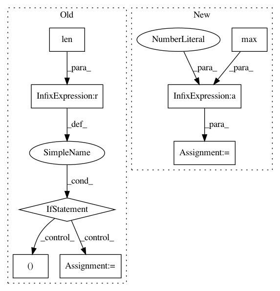

90b78b1379b3423aa3b4b5d0de7313f88bda23ab,chainercv/utils/mask/mask_to_bbox.py,,mask_to_bbox,#,5
Before Change
bbox = []
for msk in mask:
where = np.argwhere(msk)
if len(where) > 0:
y_min, x_min = where.min(0)
y_max, x_max = where.max(0) + 1
else:
y_min, x_min, y_max, x_max = 0, 0, 0, 0
bbox.append((y_min, x_min, y_max, x_max))
if len(bbox) == 0:
return xp.empty((0, 4), dtype=np.float32)
return xp.array(bbox, dtype=np.float32)
After Change
continue
y_min = ys_i.min()
x_min = xs_i.min()
y_max = ys_i.max() + 1
x_max = xs_i.max() + 1
bbox[i] = xp.array([y_min, x_min, y_max, x_max], dtype=np.float32)
return bbox
In pattern: SUPERPATTERN
Frequency: 3
Non-data size: 8
Instances
Project Name: chainer/chainercv
Commit Name: 90b78b1379b3423aa3b4b5d0de7313f88bda23ab
Time: 2019-02-17
Author: yuyuniitani@gmail.com
File Name: chainercv/utils/mask/mask_to_bbox.py
Class Name:
Method Name: mask_to_bbox
Project Name: Scitator/catalyst
Commit Name: e839626c28d8dc6030ce71f3619e934b36fb6627
Time: 2020-10-23
Author: Balaganskij.NN@phystech.edu
File Name: catalyst/metrics/functional.py
Class Name:
Method Name: process_multiclass_components
Project Name: gboeing/osmnx
Commit Name: d7b2db3c5262c82c44958afc2500efe0838f0884
Time: 2020-12-02
Author: boeing@usc.edu
File Name: osmnx/utils_graph.py
Class Name:
Method Name: _update_edge_keys